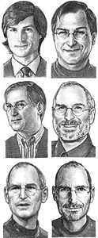

The Facts
 Full name: Steven Paul JobsBirthdate: 24 February 1955
Birth location: San Francisco, California
Social background: lower middle-class. Father was fixing cars for a living.
Education: high-school certificate. Dropped out of Reed College after one semester.
Occupations: chairman & CEO at Apple Inc. + Director at The Walt Disney Company
Net worth: $5.5 billion according to Forbes' 2010 ranking — 136th richest man on Earth
Annual salary: $1
Family
Biological parents: Joanne Simpson and possibly Abdulfattah Jandali, political sciences professor from SyriaAdoptive parents: Paul and Clara Jobs, both deceased
Siblings: adoptive sister: Patti Jobs (born 1958), biological sister: Mona Simpson (born 1957)
Spouse: Laurene Powell (born 1964), married in 1991
Children: Lisa Brennan-Jobs (born 1978), with unmarried girlfriend Chris-Ann Brennan. Reed (born 1991), Erin Siena (born 1995) and Eve (born 1998) with wife Laurene.
Personal tastes & opinion
Political orientation: Democrat. Steve funds the Democratic Party (using his wife's name) for each Presidential election, and he entertained the Clintons several times at his home in Palo Alto. Steve himself thought of running for the office of governor of California after he left Apple in 1985 — but gave up in the end. He knew Gov. Jerry Brown from his days at the Los Altos Zen Center in the 1970s.Spirituality: Steve studied Zen Buddhism in his youth. He often said that he thought of becoming a monk up in a monastery in Japan instead of starting Apple, but his guru Kobun Chino convinced him otherwise. That same Zen master was a spiritual adviser at NeXT and married Steve and Laurene in Yosemite in 1991. A lot of critics of Steve's tough management style point out: "Imagine what he'd be like if he hadn't studied buddhism..." This is one of Steve's many paradoxes: how could a real Buddhist make a living out of selling gadgets to the masses?
Favorite places: We know from Steve himself and the story of his life that he loves Yosemite, in which he demanded to be married, as well as Europe in general and Paris in particular. He said to French journalists that one of his biggest pride was to see an Apple billboard next to the Louvre. Yet his favorite place on earth is probably his home, Silicon Valley. He reportedly delights in driving on the scenic I-280, and spending hours hiking on the hills surrounding Stanford campus in Palo Alto.
Favorite music: Steve's favorite musician is definitely Bob Dylan, whose tunes he played throughout his youth with his guitar at home. He would discuss their lyrics with his friends, such as Bill Fernandez or Woz. Some people believe he dated Joan Baez mostly because she was Dylan's ex. Steve also loves The Beatles and Grateful Dead, all part of the rock scene of the 1960s (thus before he came of age). He describes himself as an audiophile: after he became rich, one of the only pieces of furniture he bought was a $100,000 stereo system. It is still true today.
Favorite art: we can't say for sure but we know that Steve loves photography. For a long time his home was only decorated with large black-and-white photographs of cultural icons such as Einstein, or the California landscape, mostly by Ansel Adams. He also had Japanese prints.